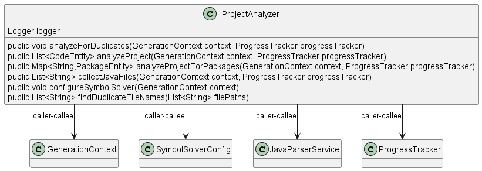

Class Diagram

Annotations
Relationships
| Type | Target | Details |
|---|---|---|
| CALLER_CALLEE | com.pjsoft.j2arch.core.context.GenerationContext | |
| CALLER_CALLEE | com.pjsoft.j2arch.core.util.SymbolSolverConfig | |
| CALLER_CALLEE | com.pjsoft.j2arch.uml.util.ProjectAnalyzer | |
| CALLER_CALLEE | com.pjsoft.j2arch.core.util.JavaParserService | |
| CALLER_CALLEE | com.pjsoft.j2arch.core.util.ProgressTracker |
Fields
| Visibility | Type | Name | Annotations | Description |
|---|---|---|---|---|
| private | Logger | logger | Description placeholder |
Constructors
| Visibility | Name | Parameters | Annotations | Description |
|---|---|---|---|---|
| public | ProjectAnalyzer | Description placeholder |
Methods
| Visibility | Return Type | Name | Annotations | Description |
|---|---|---|---|---|
| public | void | analyzeForDuplicates(GenerationContext context, ProgressTracker progressTracker) | Description placeholder | |
| public | List | analyzeProject(GenerationContext context, ProgressTracker progressTracker) | Description placeholder | |
| public | Map | analyzeProjectForPackages(GenerationContext context, ProgressTracker progressTracker) | Description placeholder | |
| public | List | collectJavaFiles(GenerationContext context, ProgressTracker progressTracker) | Description placeholder | |
| public | void | configureSymbolSolver(GenerationContext context) | Description placeholder | |
| public | List | findDuplicateFileNames(List | Description placeholder |